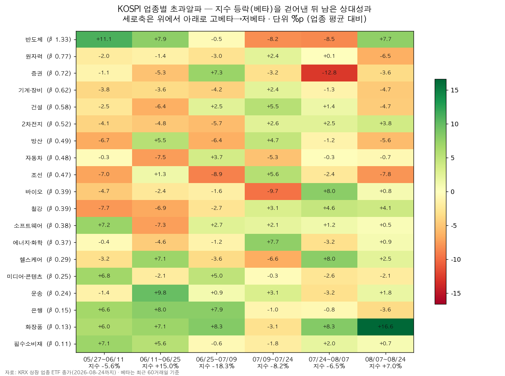
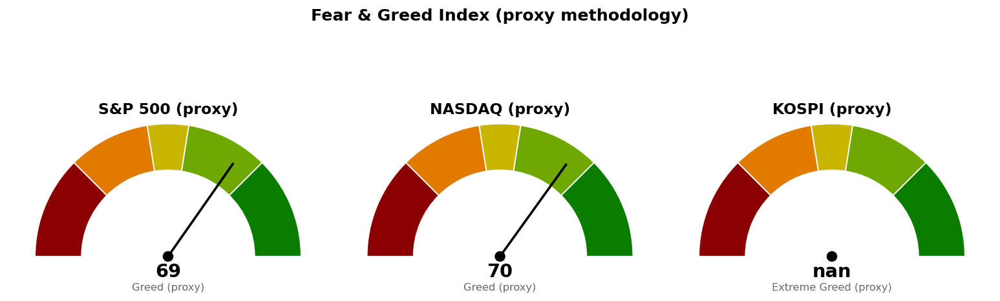

순환매의 통상적 정의는 *주도 업종이 일정 기간 앞서다가, 그 자리를 다음 업종이 이어받는 것*입니다. 두 가지를 나눠 봐야 합니다.
| 확인 항목 | 수치 | 해석 |
|---|---|---|
| 10거래일 구간 간 업종 순위 상관 | +0.07, -0.21, 0.00, -0.16, +0.38 (평균 +0.02) | 주도 업종이 전혀 이어지지 않습니다 |
| 베타(지수 민감도) 제거 후 순위 상관 | +0.19, +0.01, -0.40, -0.21, +0.32 (평균 -0.02) | 제거해도 마찬가지 |
| 1개월 업종 수익률 최고-최저 | 42.7%p (표준편차 9.4%p) | 업종 간 격차는 매우 큽니다 |
| 업종-지수 일간 상관 평균 | 최근 20일 0.57 / 60일 0.54 | 다 같이 움직이는 장은 아닙니다 |
여기까지만 보면 순환매가 맞습니다. 그런데 "무엇이 바뀌는지"를 보면 이야기가 달라집니다.
지수가 빠진 구간에서 어떤 업종이 이겼는지를 베타 순위와 대조하면 상관계수가 -0.58, -0.77, -0.21, -0.56으로 일관되게 음수입니다. 즉 지수가 빠질 때마다 베타가 낮은 업종이 이겼습니다. 반대로 지수가 크게 오른 구간(6/11~6/25, +15.0%)에서는 베타 1.33인 반도체가 +15.3%로 단독 1위였습니다.
업종을 도는 것이 아니라 지수 방향을 따라 방어 업종과 반도체 사이를 왕복하고 있습니다.

위 표는 각 업종의 수익률에서 지수 등락으로 설명되는 부분(베타×지수수익률)을 뺀 값입니다. 지수를 따라 움직인 몫을 제외하고 그 업종만의 힘으로 업종 평균을 얼마나 앞섰는지를 나타내며, 아래에서는 이를 초과알파라고 부르겠습니다. 초록이 세로로 이어지는 줄은 화장품 한 곳뿐입니다. 나머지는 초록과 빨강이 번갈아 나옵니다.
10거래일 단위로 끊어 본 주도 업종의 이동 경로입니다. 괄호 안은 해당 구간 수익률입니다.
| 구간 | 지수 | 상위 업종 | 하위 업종 |
|---|---|---|---|
| 05/27~06/11 | -5.6% | 필수소비재(-0.5), 은행(-1.2), 미디어·콘텐츠(-1.5) | 방산(-16.4), 조선(-16.7), 철강(-16.8) |
| 06/11~06/25 | +15.0% | 반도체(+15.3), 운송(+0.8), 방산(+0.4) | 자동차(-12.8), 철강(-13.6), 소프트웨어(-14.1) |
| 06/25~07/09 | -18.3% | 화장품(+7.9), 은행(+7.1), 미디어·콘텐츠(+2.4) | 원자력(-15.0), 조선(-15.6), 반도체(-22.8) |
| 07/09~07/24 | -8.2% | 에너지·화학(+9.7), 조선(+6.7), 운송(+6.2), 건설(+5.8) | 자동차(-4.2), 바이오(-7.9), 반도체(-14.1) |
| 07/24~08/07 | -6.5% | 화장품(+13.8), 헬스케어(+12.5), 바이오(+11.9), 철강(+8.4) | 반도체(-10.8), 증권(-11.1) |
| 08/07~08/24 | +7.0% | 화장품(+14.0), 반도체(+13.4), 2차전지(+4.0), 철강(+3.3) | 방산(-5.7), 은행(-6.0), 조선(-8.0) |
읽는 법은 단순합니다. 지수가 급등한 두 구간(6월 중순, 8월 중순)에서만 반도체가 1위로 올라오고, 나머지 네 구간은 전부 화장품·은행·필수소비재·미디어 같은 저베타 업종이 상위에 있습니다. 7/09~07/24 구간의 에너지·화학·조선·건설 상위는 앞선 구간에 크게 밀렸던 업종의 되돌림이며, 바로 다음 구간에 조선은 다시 하위로 내려갔습니다.
지수 등락분을 제거한 6개 구간 누적 초과성과(업종 평균 대비, %p)입니다.
| 상위 | 누적 | 하위 | 누적 | |
|---|---|---|---|---|
| 화장품 | +43.3 | 조선 | -19.2 | |
| 은행 | +17.1 | 증권 | -18.7 | |
| 필수소비재 | +12.9 | 기계·장비 | -15.3 | |
| 운송 | +11.0 | 원자력 | -10.4 | |
| 반도체 | +9.4 | 자동차 | -10.4 | |
| 소프트웨어 | +6.4 | 방산 | -9.6 |
화장품은 베타 0.13으로 가장 낮은데도 6개 구간 중 5개에서 플러스 알파를 냈고, 지수가 오른 구간(+7.0%)에서도 +16.6%p로 1위였습니다. 오를 때도 빠질 때도 이긴 유일한 업종이므로, 이것만은 방어 성격이 아니라 실질적인 주도 업종으로 봐야 합니다.
가장 최근 두 구간의 초과알파 부호입니다.
| 업종 | 07/24~08/07 | 08/07~08/24 | 판단 |
|---|---|---|---|
| 화장품 | +8.3 | +16.6 | 2구간 연속, 가속 |
| 반도체 | -8.5 | +7.7 | 마이너스에서 반전 |
| 철강 | +4.6 | +4.1 | 2구간 연속 |
| 2차전지 | +2.5 | +3.8 | 2구간 연속 |
| 헬스케어·바이오 | +8.0 | +2.5 / +0.8 | 둔화 |
| 은행 | -0.8 | -3.6 | 2구간 연속 마이너스 |
| 조선·원자력·방산 | -2.4 / +0.1 / -1.2 | -7.8 / -6.5 / -5.6 | 악화 |
주간 기준(최근 5거래일) KOSPI 대비 초과수익 상위는 화장품 +11.4%p, 운송 +4.5%p, 철강 +4.1%p, 필수소비재 +4.0%p, 헬스케어 +2.4%p입니다. 반도체는 1개월 순위 10위에서 주간 순위 7위로 올라오는 중이고, 은행은 3개월 2위에서 주간 9위로 밀렸습니다. 방어 업종 안에서도 은행에서 화장품·필수소비재·운송으로 무게가 옮겨간 상태입니다.

S&P 500 69.4 (Greed), 나스닥 69.8 (Greed)입니다. KOSPI는 점수를 내지 못했습니다 — 한국 변동성지수(VKOSPI) 데이터를 가져오지 못해 변동성과 안전자산 항목이 비었고, 모멘텀 항목도 결측으로 빠졌습니다. 게이지 그림의 KOSPI 칸이 비어 있는 것은 그 때문이며, 아래에 붙은 라벨은 점수 없이 나온 것이라 읽지 마시기 바랍니다.
미국 심리는 탐욕 구간인데 한국은 지수 하루 변동폭이 종가 대비 5.8%에 달합니다. 이 괴리가 위의 저베타 쏠림을 만든 배경입니다.
*본 자료는 투자 판단의 참고 정보이며 투자자문이 아닙니다. 모든 수치는 위에 명시한 기준 시점의 시장 데이터에서 산출했습니다.*